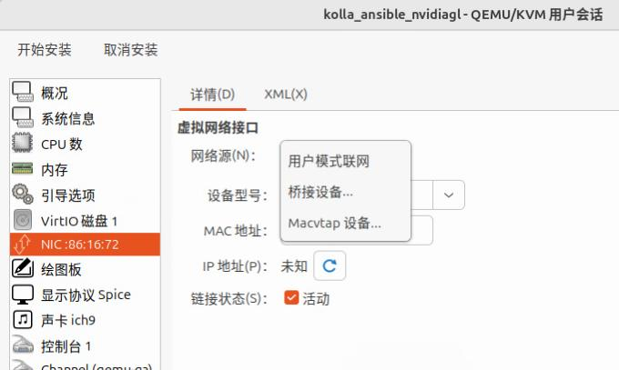
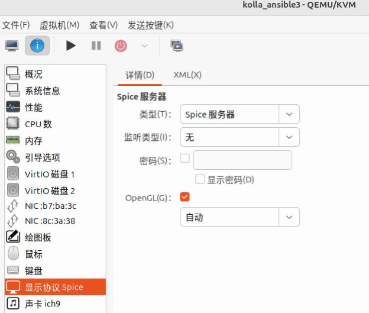
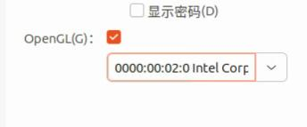
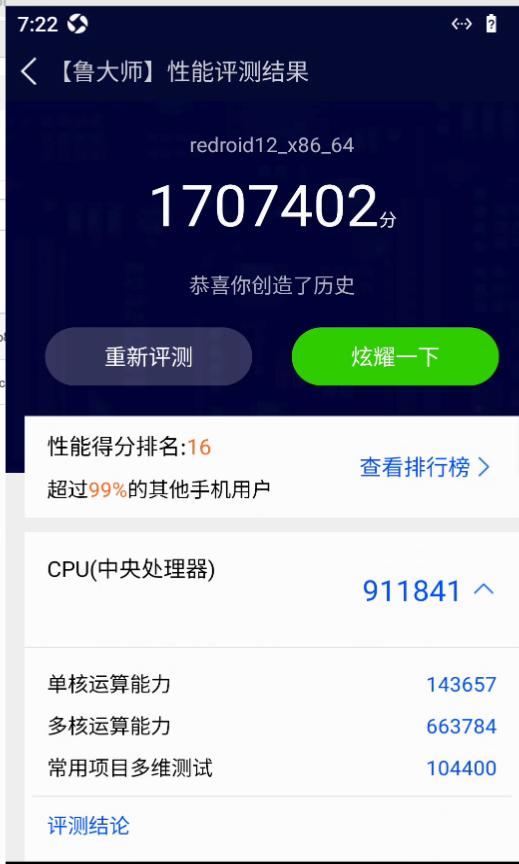

20250710
1. zun privileged
policy.json is fetched from https://opendev.org/openstack/zun/src/commit/83d525c42541774cc07cf31f551551af34370993/etc/zun/policy.json, added "container:create:privileged": "rule:admin_or_user",.
{
"context_is_admin": "role:admin",
"admin_or_owner": "is_admin:True or project_id:%(project_id)s",
"default": "rule:admin_or_owner",
"admin_api": "rule:context_is_admin",
"admin_or_user": "is_admin:True or user_id:%(user_id)s",
"container:create": "rule:default",
+++ "container:create:privileged": "rule:admin_or_user",
"container:delete": "rule:admin_or_user",
"container:get": "rule:default",
"container:get_all": "rule:default",
"container:update": "rule:admin_or_user",
"container:start": "rule:admin_or_user",
"container:stop": "rule:admin_or_user",
"container:reboot": "rule:admin_or_user",
"container:pause": "rule:admin_or_user",
"container:unpause": "rule:admin_or_user",
"container:logs": "rule:admin_or_user",
"container:execute": "rule:admin_or_user",
"container:execute_resize": "rule:admin_or_user",
"container:kill": "rule:admin_or_user",
"container:update": "rule:admin_or_user",
"container:rename": "rule:admin_or_user",
"container:attach": "rule:admin_or_user",
"container:resize": "rule:admin_or_user",
"container:top": "rule:admin_or_user",
"container:get_archive": "rule:admin_or_user",
"container:put_archive": "rule:admin_or_user",
"container:stats": "rule:admin_or_user",
"container:commit": "rule:admin_or_user",
"image:pull": "rule:default",
"image:get_all": "rule:default",
"image:search": "rule:default",
"zun-service:delete": "rule:admin_api",
"zun-service:disable": "rule:admin_api",
"zun-service:enable": "rule:admin_api",
"zun-service:get_all": "rule:admin_api"
}
Controller node:
# docker ps | grep zun
02e8cb126ffa quay.nju.edu.cn/openstack.kolla/zun-wsproxy:2024.1-ubuntu-jammy "dumb-init --single-…" 3 hours ago Up 27 minutes (healthy) zun_wsproxy
12c14cefb9bb quay.nju.edu.cn/openstack.kolla/zun-api:2024.1-ubuntu-jammy "dumb-init --single-…" 3 hours ago Up 28 minutes (healthy) zun_api
# docker cp policy.json zun_api:/etc/zun/
# docker cp policy.json zun_wsproxy:/etc/zun/
# ls /etc/kolla/ | grep zun
zun-api
zun-wsproxy
# vim /etc/kolla/zun-api/zun.conf
# vim /etc/kolla/zun-wsproxy/zun.conf
Added:
[oslo_policy]
policy_file = /etc/zun/policy.json
# docker restart zun_api && docker restart zun_wxproxy
Compute node:
# docker ps | grep zun
804fa4b38e9b quay.nju.edu.cn/openstack.kolla/zun-cni-daemon:2024.1-ubuntu-jammy "dumb-init --single-…" 3 hours ago Up 27 minutes (healthy) zun_cni_daemon
9a43a16a3c98 quay.nju.edu.cn/openstack.kolla/zun-compute:2024.1-ubuntu-jammy "dumb-init --single-…" 3 hours ago Up 27 minutes (healthy) zun_compute
# docker cp policy.json zun_cni_daemon:/etc/zun/
# docker cp policy.json zun_compute:/etc/zun/
# ls /etc/kolla/ | grep zun
zun-cni-daemon
zun-compute
# vim /etc/kolla/zun-cni-daemon/zun.conf
# vim /etc/kolla/zun-wcompute/zun.conf
Added:
[oslo_policy]
policy_file = /etc/zun/policy.json
# docker restart zun_compute && docker restart zun_cni_daemon
Create privileged docker instance:
# openstack network list
+--------------------------------------+---------+--------------------------------------+
| ID | Name | Subnets |
+--------------------------------------+---------+--------------------------------------+
| aa723767-ec93-4963-a3e0-3f1e6b028b1c | int-net | 6cac1cc1-644e-467c-9232-bafe1f035e54 |
| c58aec55-4e70-47e9-8222-89aed074217b | ext-net | 9506046d-ad61-441a-a63b-66b57d6e8143 |
+--------------------------------------+---------+--------------------------------------+
# openstack appcontainer run --privileged --name mm --image-pull-policy=never --net network=aa723767-ec93-4963-a3e0-3f1e6b028b1c --cpu 4 --memory 8192 xxxxx

aosp instance:

Specify the host and init parameters:
openstack appcontainer run --privileged --name mmk --image-pull-policy=never --net network=1cd5bde1-6151-4ea6-9429-b74f7b467f99 --cpu 4 --memory 8192 --host openstack3 redroid12houdini:latest androidboot.redroid_width=1080 androidboot.redroid_height=1920 androidboot.redroid_dpi=480
2. change machine id
via:
sudo rm -f /etc/machine-id
sudo dbus-uuidgen --ensure=/etc/machine-id
sudo rm /var/lib/dbus/machine-id
sudo dbus-uuidgen --ensure
sudo reboot
3. virgl kolla node
Specify user session:



So it won't be attached to virbr1(192.168.150.2/24) network.
Changed to:

or :

Won't use nvidia card.
test@openstack3:~$ sudo dmesg | grep -i virgl
[ 1.280751] [drm] features: +virgl +edid -resource_blob -host_visible
houdini workable:
# openstack appcontainer run --privileged --name mmk --image-pull-policy=never --net network=1cd5bde1-6151-4ea6-9429-b74f7b467f99 --cpu 4 --memory 8192 --host openstack3 redroidhoudini12:latest androidboot.redroid_width=1080 androidboot.redroid_height=1920 androidboot.redroid_dpi=480 androidboot.redroid_gpu_mode=host androidboot.redroid_gpu_node=/dev/dri/renderD128 androidboot.redroid_fps=120
# openstack appcontainer list
+--------------------------------------+---------------+-------------------------+----------+--------------------+-----------------+-------+
| uuid | name | image | status | task_state | addresses | ports |
+--------------------------------------+---------------+-------------------------+----------+--------------------+-----------------+-------+
| a54f636e-0113-42b8-88b8-433f2ed0b386 | mmk | redroidhoudini12:latest | Deleting | container_deleting | 192.168.150.150 | [] |
| ffeaa2d0-1d07-4c1c-8746-5bf14e1fbf6a | redroid120fps | redroidhoudini12:latest | Running | None | 192.168.150.127 | [] |
+--------------------------------------+---------------+-------------------------+----------+--------------------+-----------------+-------+
